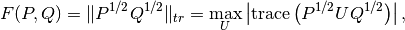
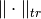
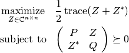
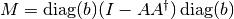
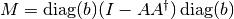
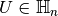
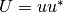

Complex Semidefinite Programming¶
Since the version 1.0.1, it is possible to do complex semidefinite programming with Picos. This extension of semidefinite programming to the complex domain was introduced by Goemans and Williamson [1] as relaxtions of combinatorial optimization problems, and has applications e.g. in Quantum Information Theory [2], or for the phase recovery problem in signal processing [3].
To handle complex SDPs in Picos, we have introduced two new variable types: 'complex' and 'hermitian'. A complex variable can be created as follows:
>>> import picos as pic
>>> import cvxopt as cvx
>>> P = pic.Problem()
>>> Z = P.add_variable('Z',(3,2),'complex')
it automatically creates two variables called Z_RE and Z_IM which contains the real and imaginary part of Z, and that be accessed by using the real and imag properties:
>>> Z.real
# variable Z_RE:(3 x 2),continuous #
>>> Z.imag
# variable Z_IM:(3 x 2),continuous #
>>> Z.vtype
'complex'
The python variable Z contains an affine expression equal to Z_RE + 1j * Z_IM, and that can be used to easily define a complex SDP.
The variable type 'hermitian' can be used to create a complex variable that is forced to be Hermitian. The following properties can now be used with every affine expression: conj (complex conjugate), real (real part, i.e. exp.real returns 0.5 * (exp+exp.conj) ), imag (imaginary part, i.e. exp.imag returns -0.5 * 1j * (exp-exp.conj) ), anf H (Hermitian transposition, i.e. exp.H returns exp.conj.T ).
>>> X = P.add_variable('X',(3,3),'hermitian')
>>> X >> 0
# (3x3)-LMI constraint X ≽ |0| #
Fidelity in Quantum Information Theory¶
The material of this section is inspired from a lecture of John Watrous [4].
The Fidelity between two (Hermitian) positive semidefinite operators  and
and  is defined as:
is defined as:

where the trace norm  is the sum of the singular values,
and the maximization goes over the set of all unitary matrices  .
This quantity can be expressed as the optimal value of the following complex-valued SDP:
.
This quantity can be expressed as the optimal value of the following complex-valued SDP:

This Problem can be solved as follows in PICOS
#generate two (arbitrary) positive hermitian operators
P = cvx.matrix([ [1-1j , 2+2j , 1 ],
[3j , -2j , -1-1j],
[1+2j, -0.5+1j, 1.5 ]
])
P = P * P.H
Q = cvx.matrix([ [-1-2j , 2j , 1.5 ],
[1+2j ,-2j , 2.-3j ],
[1+2j ,-1+1j , 1+4j ]
])
Q = Q * Q.H
n=P.size[0]
P = pic.new_param('P',P)
Q = pic.new_param('Q',Q)
#create the problem in picos
F = pic.Problem()
Z = F.add_variable('Z',(n,n),'complex')
F.set_objective('max','I'|0.5*(Z+Z.H)) #('I' | Z.real) works as well
F.add_constraint(((P & Z) // (Z.H & Q))>>0 )
print F
F.solve(verbose = 0)
print 'fidelity: F(P,Q) = {0:.4f}'.format(F.obj_value())
print 'optimal matrix Z:'
print Z
#verify that we get the same value with numpy
import numpy as np
PP = np.matrix(P.value)
QQ = np.matrix(Q.value)
S,U = np.linalg.eig(PP)
sqP = U * np.diag([s**0.5 for s in S]) * U.H #square root of P
S,U = np.linalg.eig(QQ)
sqQ = U * np.diag([s**0.5 for s in S]) * U.H #square root of P
fidelity = sum(np.linalg.svd(sqP * sqQ)[1]) #trace-norm of P**0.5 * Q**0.5
print 'fidelity computed by trace-norm: F(P,Q) = {0:.4f}'.format(fidelity)
---------------------
optimization problem (SDP):
18 variables, 0 affine constraints, 21 vars in 1 SD cones
Z_RE : (3, 3), continuous
Z_IM : (3, 3), continuous
maximize trace( 0.5*( Z + Z.H ) )
such that
[P,Z;Z.H,Q] ≽ |0|
---------------------
fidelity: F(P,Q) = 37.4742
optimal matrix Z:
[ 1.51e+01+j2.21e+00 -7.17e+00-j1.22e+00 2.52e+00+j6.86e-01]
[-4.88e+00+j4.06e+00 1.00e+01-j1.57e-01 8.33e+00+j1.13e+01]
[-4.32e-01+j2.98e-01 3.84e+00-j3.28e+00 1.24e+01-j2.05e+00]
fidelity computed by trace-norm: F(P,Q) = 37.4742
Phase Recovery in Signal Processing¶
The material from this section is inspired from [3].
The goal of the phase recovery problem is to reconstruct the complex phase of a vector,
when we are only given the magnitude of some linear measurements.
This problem can be formulated as a nonconvex optimization problem,
and the authors of [3] have proposed a complex SDP relaxation
similar to the well known Max-Cut SDP:
Given a linear operator  and a vector
and a vector  of measured amplitudes,
define the positive semidefinite hermitian matrix ,
the Phase-cut Problem is:
of measured amplitudes,
define the positive semidefinite hermitian matrix ,
the Phase-cut Problem is:

Here the variable must be hermitian ( ),
and we have a solution to the phase recovery problem if  has rank one.
Otherwise, the leading singular vector of is used as an approximation.
This problem can be implemented as follows using Picos:
# We generate an arbitrary matrix M
import cvxopt as cvx
import picos as pic
n = 5
rank = 4 #we take a singular M for the sake of generality
M = cvx.normal (n,rank) +1j*cvx.normal (n,rank)
M = M * M.H
M = pic.new_param('M',M)
P = pic.Problem()
U = P.add_variable('U',(n,n),'hermitian')
P.add_list_of_constraints([U[i,i]==1 for i in range(n)],'i')
P.add_constraint(U >> 0)
P.set_objective('min', U | M)
print P
#solve the problem
P.solve(verbose=0)
#optimal complex variable
print
print 'optimal variable: U='
print U
print
#Do we have a matrix of rank one ?
S, V = np.linalg.eig(U.value)
print 'rank of U = ', len([s for s in S if abs(s)>1e-6])
---------------------
optimization problem (SDP):
36 variables, 8 affine constraints, 36 vars in 1 SD cones
U : (8, 8), hermitian
minimize 〈 U | M 〉
such that
U[i,i] = 1.0 for all i
U ≽ |0|
---------------------
optimal variable: U=
[ 1.00e+00+j8.97e-10 9.11e-01-j1.27e-01 1.46e-01+j9.38e-01 -7.30e-01+j6.32e-01 -5.52e-01-j8.09e-01]
[ 9.11e-01+j1.27e-01 1.00e+00+j1.32e-09 1.05e-01+j9.56e-01 -8.04e-01+j5.66e-01 -4.73e-01-j8.40e-01]
[ 1.46e-01-j9.38e-01 1.05e-01-j9.56e-01 1.00e+00+j1.19e-09 4.96e-01+j8.58e-01 -9.00e-01+j4.19e-01]
[-7.30e-01-j6.32e-01 -8.04e-01-j5.66e-01 4.96e-01-j8.58e-01 1.00e+00+j9.45e-10 -9.85e-02+j9.91e-01]
[-5.52e-01+j8.09e-01 -4.73e-01+j8.40e-01 -9.00e-01-j4.19e-01 -9.85e-02-j9.91e-01 1.00e+00+j9.16e-10]
rank of U = 2
References¶
- “Approximation algorithms for MAX-3-CUT and other problems via complex semidefinite programming”, M.X. Goemans and D. Williamson. In Proceedings of the thirty-third annual ACM symposium on Theory of computing, pp. 443-452. ACM, 2001.
- “Semidefinite programs for completely bounded norms”, J. Watrous, arXiv preprint 0901.4709, 2009.
- “Phase recovery, maxcut and complex semidefinite programming”, I. Waldspurger, A. d’Aspremont, and S. Mallat. Mathematical Programming, pp. 1-35, 2012.
- “Semidefinite Programs for fidelity and optimal measurements”, J. Watrous, in the script of a course on Theory of Quantum Information